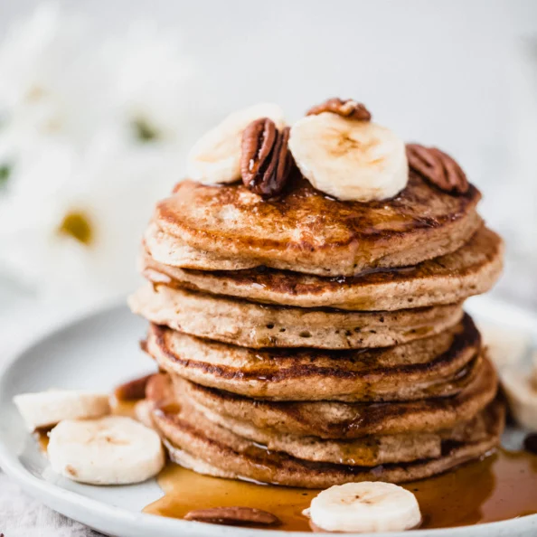

Healthy pancakes

Description
Love pancakes but trying to lose weight? Try out this recipe for a delicious, guilt-free experience!
The best part? You need only a handful of ingridients that you proabably already have in your kitchen.
Ingredients
- 1 Banana
- 40g Oatmeal
- 2 Eggs
- 1 tbsp Baking Powder
- 1 tspn Vanilla Extract
- 1 tspn Coconut Oil
- Optional: 80ml Almond Milk
Steps
- In a bowl, smash the banana with a fork
- Add the eggs and the oatmeal and mix everything together
- Add the baking powder and vanilla extract to the mix
- Put a tspn of coconut oil into a pan and add the mix
- Fry for about 2 min per side
- Serve and enjoy!